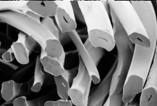
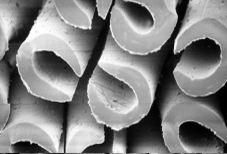

Kilatt P is a C-cross-sectioned polyester yarn developed with original technology, which possesses lightweight characteristics ideal for the production of comfortable fabrics.

| Conventional hollow fiber False-twisting may flatten the hollow. |

| Kilatt P The hollow shows clearly by dissolution after weaving/knitting. |
Features
Lightweight
Designed for hollowing through dissolution, Kilatt P enables 30% weight saving of resultant fabrics.
Water-absorbent but Quick-drying
A lengthwise slit quickly captures and releases perspiration, maintaining a dry and crisp feel.
Heat-retentive
The airspace of the hollow provides excellent warmth retaining property.
Unique Fiber Construction
Kilatt P has a C-shaped cross section with a hollow and a slit, obtained by dissolving a core component.
Comfortable Feel
The C-shaped yarn structure with a slit provides cushiony effect and crispness, making resultant fabrics pleasant to the touch.
Stretchy and Lofty
Before dissolution of the core component, Kilatt P has nearly the same physical properties as those of conventional polyester and nylon. This means Kilatt P can be false-twisted into various types of stretch/bulky yarns.
| Copyright(C) 2007 KB SEIREN, LTD. All Rights Reserved. | Site Map | Contact Us | Japanese | chinese |